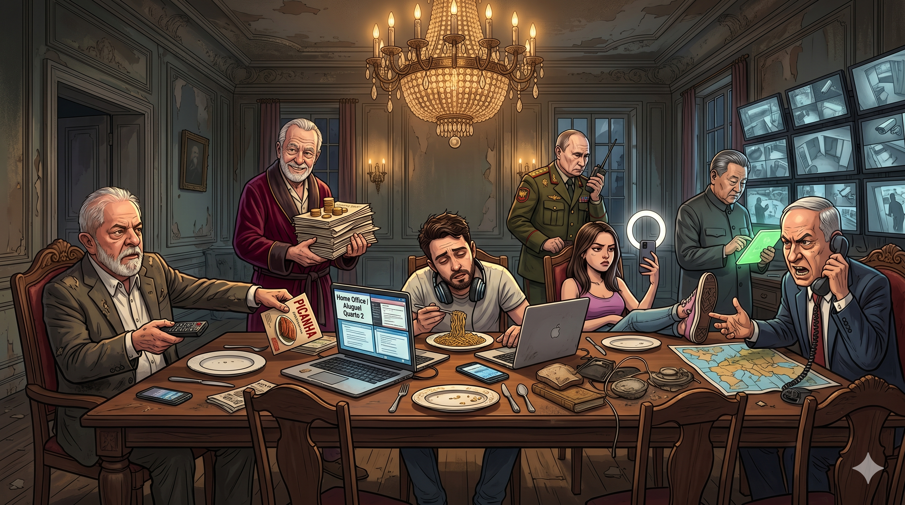

A Mesa dos Gigantes: O Conto dos Não Convidados na Era dos Ativos

Espremidos entre tanques geopolíticos, decretos de picanha e escrituras trancadas sob sete chaves, a nova geração tenta decifrar se é possível viver além da mesa de jacarandá dos mais velhos.
Tempo de leitura: 8 minutos
Felipe quebrou o bloco de miojo cru ao meio. O som estalou no salão como um galho seco sob a bota de um soldado. Ele olhou de soslaio para a direita, temendo ter chamado a atenção dos donos da casa, mas o medo era infundado: para os Gigantes, Felipe e Clara eram pouco mais que poeira suspensa na luz do lustre.
Eles moravam no "Quarto 2", um retângulo imaginário de quarenta centímetros delimitado por marcas de caneta esferográfica no canto inferior esquerdo de uma imensa mesa de jacarandá. O tampo de madeira, esculpido com arabescos barrocos e manchado por décadas de cera e café, era o mundo inteiro deles. No notebook de Felipe, a tela dividida exibia linhas de código em Java e uma planilha orçamentária batizada com o mesmo nome do cubículo: Home Office / Aluguel Quarto 2. A conta nunca fechava.
"A luz desse ring light está estourando a minha pele", queixou-se Clara, ajustando o tripé metálico posicionado rente ao prato de louça lascada. Ela forçou um sorriso simétrico para a câmera do celular. "Hey, pessoal! Hoje vou mostrar como o minimalismo extremo pode ser estético. Quem precisa de paredes quando se tem um jacarandá centenário sob os pés? Não se esqueçam de assinar o canal para apoiar a nossa jornada offline-first!"
Felipe suspirou, mastigando um pedaço de macarrão instantâneo sem tempero. "Se você falar de minimalismo de novo, o Velho do Roupão vai achar que estamos confortáveis e aumentar a taxa de condomínio do tampo."
O Velho de Roupão Vermelho, uma entidade de cabelos grisalhos e riso cínico que habitava a cabeceira esquerda, era o senhor feudal da mesa. Ele passava os dias contando moedas de ouro e folheando uma pilha monumental de escrituras e registros de imóveis. Ele representava aqueles que haviam chegado primeiro. Aos dezoito anos, o Velho costumava contar aos ventos que bastava "trabalhar duro" para comprar três metros lineares de mesa. Hoje, ele alugava o Quarto 2 para Felipe pelo preço de dez mil linhas de código limpo por mês. Ele simplesmente não queria largar o osso.
Ao redor do casal, a mesa fervilhava em uma janta caótica promovida pelos grandes líderes do salão. A indiferença deles em relação aos jovens era absoluta, mas o impacto de suas ações era imediato.
À esquerda de Felipe, o presidente brasileiro, de terno cinza ralado e óculos na ponta do nariz, acenava animadamente com um controle remoto na mão, apontando para um panfleto colorido onde se lia "PICANHA". "O churrasquinho vai voltar, companheiro!", exclamava ele, enquanto seu olhar passava por cima da cabeça de Felipe, mirando o horizonte vazio. No prato lascado dos jovens, porém, o miojo continuava tão cinzento quanto antes.
Mais ao centro, o general de uniforme verde-oliva esbravejava ordens em um walkie-talkie preto, gesticulando com fúria. A cada palavra gritada, a mesa tremia ligeiramente, fazendo o notebook de Felipe oscilar. "O ping subiu para 800ms de novo", resmungou o programador, olhando para a latência da conexão que vinha dos cabos submarinos. "Toda vez que ele resolve mover os tanques de brinquedo perto do mapa, o meu servidor remoto na Europa entra em colapso."
Atrás do general, a figura impassível e calva do líder asiático deslizava o dedo mindinho sobre a tela verdejante de um tablet. Ele quase não piscava. Atrás dele, uma parede inteira de monitores de segurança piscava em alta definição, vigiando cada milímetro do salão. Ele controlava o fluxo das redes. Clara sabia disso: bastava usar uma palavra proibida em sua transmissão de estilo de vida para que o algoritmo derrubasse o alcance de seu ring light a níveis de insignificância estatística.
No extremo oposto da mesa, o premier de terno azul gritava exasperado em um telefone preto antigo, os olhos esbugalhados focados em um mapa-múndi estendido sobre a madeira. Ele empurrava divisões imaginárias com o cotovelo, ignorando a taça de vinho que quase transbordava sobre o continente europeu.
"É o capitalismo de ativos, Clara", murmurou Felipe, a voz abafada pelo miojo seco. "Nenhum salário nosso consegue comprar um centímetro dessa mesa. A gente estuda, tira certificação, fala quatro idiomas para programar microsserviços em Java, mas o preço do metro quadrado de madeira sobe mais rápido do que a nossa capacidade de digitar. Nossos pais compraram terrenos nos bairros nobres por um punhado de cruzados; nós disputamos o Quarto 2 pagando pedágio para holdings familiares de investidores invisíveis."
Clara desligou a transmissão. O brilho artificial do ring light apagou-se, deixando o rosto dela pálido sob a penumbra do lustre barroco. "Eu li sobre os jovens na Grécia hoje. Eles chamam de 'Geração Boomerang'. Saem de casa, tentam a vida em Atenas, mas o turismo e os aluguéis temporários de temporada engolem tudo. Eles voltam para o quarto de solteiro aos trinta e cinco anos, encolhendo os ombros sob as asas dos pais."
"Não é só na Grécia", disse Felipe. "É na Europa inteira. É nos Estados Unidos, onde os recém-formados já saem da faculdade devendo o equivalente a um apartamento de VRAM para pagar o financiamento estudantil. E a solução que nos vendem é a tal da 'fuga de cérebros'."
Ele apontou para o mapa-múndi no meio da mesa. "Olha para aquela fila ali. É uma dança das cadeiras global da insatisfação. O desenvolvedor brasileiro foge para a Alemanha porque o real não vale nada. O alemão foge para o interior de Portugal para morar numa van porque Berlim ficou cara demais. O português foge para os Estados Unidos para ganhar em dólar. E o americano de San Francisco dorme em uma cápsula de dois metros de comprimento porque as Big Techs inflacionaram até o preço do ar."
Felipe fechou a tela do notebook. O logotipo da maçã mordida apagou-se. Pela primeira vez em meses, ele não olhou para a planilha de orçamento nem para o console de deploy. Ele olhou para baixo.
Abaixo do tampo da mesa de jacarandá, havia o vazio. E sob o vazio, a muitos metros de profundidade, havia o chão do salão. Era um piso de poeira e terra batida, esquecido pelo tempo, longe do brilho do lustre e da cobiça dos Gigantes.
"O que tem lá embaixo?", perguntou Clara, seguindo o olhar dele.
"Terra de verdade", respondeu Felipe. "Longe das moedas do Velho, longe dos tanques do general, longe da picanha de papel do presidente."
"Mas não tem Wi-Fi", hesitou ela.
"Também não tem aluguel de quarenta centímetros", disse Felipe, estendendo a mão para ela. "Eles nunca vão largar o osso, Clara. Porque para eles, o osso é o tampo inteiro da mesa. A única forma de ter um lar é parar de disputar os farelos que caem dos pratos deles. É hora de descer."
Clara olhou para o celular silenciado e depois para a escuridão sob a borda da madeira. Devagar, ela colocou a mão sobre a de Felipe. Eles se arrastaram até o limite da mesa, sem que ninguém na janta dos deuses notasse a poeira que finalmente se desprendia do jacarandá em direção ao solo.
Apêndice: Os Ocupantes da Mesa
Para quem deseja decifrar a sátira, eis o elenco de forças e caricaturas que dividem o tampo de jacarandá no casarão faliu:
- O Velho do Roupão Vermelho (O Mercado Imobiliário & Acúmulo de Ativos): O senhor feudal da mesa. Comprou seu espaço nos anos 1980 por preço de banana. Passa o dia trancado contando moedas e escrituras, cobrando aluguel dos netos para usar a cozinha e alegando que "no tempo dele, as pessoas trabalhavam duro para ter um teto".
- Papai Januário (A Geração X / Lula): Gerencia a cozinha e as contas cotidianas. Vive repetindo histórias de como tudo era promissor nos anos 2000, acena com promessas de picanha de domingo, mas mantém a geladeira vazia. Não larga o controle remoto por nada, critica a juventude, mas paga em segredo o plano de saúde dos filhos para que não sucumbam.
- Tio Vladimir (Putin): O tio paranoico e belicoso. Trancou a porta do corredor dos fundos, anexou à força o quartinho da bagunça do vizinho e ameaça explodir o botijão de gás da cozinha se alguém questionar sua autoridade. Veste casaco militar antigo e reclama que a casa era melhor na juventude.
- Tio Ping (Xi Jinping): O tio controlador. Instalou câmeras de vigilância em todos os cômodos, monitora o histórico do Wi-Fi e decide quem come. Fabrica tudo o que a casa consome, de lâmpadas a pratos, mas cobra caro dos sobrinhos e não tolera palpites em sua gestão.
- Tio Bibi (Netanyahu): O tio em eterna disputa com a vizinhança. Vive destruindo a cerca do vizinho ao lado e alega legítima defesa quando a polícia chega. Recusa-se a sair da sala de TV porque sabe que, se levantar do sofá, a família o processará pelos estragos acumulados.
- Felipe / Enzo (O Millennial Calejado): Tem 32 anos, fala quatro idiomas e ostenta pós-graduações inúteis na parede. Trabalha em regime PJ madrugada adentro para uma empresa estrangeira. Vive cansado, de moletom, gastando sua renda com o aluguel do Quarto 2 cobrado pelo avô e as taxas cobradas pelo pai.
- Clara / Valentina (A Gen Z Rebelde): Tem 22 anos. Grava vídeos para redes sociais criticando o cinismo dos tios sob a luz de um anel de LED. Despreza o roteiro tradicional e junta centavos para fugir como nômade digital para Berlim ou Tailândia, ignorando que o casarão de lá é gerido por tios idênticos.
Análise Econômica: A Economia de Ativos e a Frustração Geracional
Por trás da metáfora satírica de "A Mesa dos Gigantes", residem dados estruturais e dinâmicas macroeconômicas consolidadas. O debate geracional contemporâneo reflete uma mudança tectônica no funcionamento da economia global nas últimas quatro décadas. Abaixo, detalhamos os fatores técnicos, demográficos e estatísticos que sustentam esse diagnóstico.
1. Renda Salarial vs. Economia de Ativos (The Asset Economy)
O pacto social tradicional do século XX baseava-se em uma premissa simples: a qualificação profissional e o esforço salarial garantiriam ascensão social e patrimonial. Contudo, a transição para uma economia focada em ativos alterou essa dinâmica. Hoje, a criação de riqueza está fortemente atrelada à propriedade de ativos (imóveis, capital e ações) em detrimento da renda salarial pura.
Enquanto a produtividade e o nível educacional da geração Millennial (nascidos entre 1981 e 1996) e da Geração Z cresceram significativamente em comparação aos seus pais, o rendimento real médio do trabalho permaneceu estagnado. O capital inicial necessário para ingressar no mercado de ativos tornou-se uma barreira de entrada quase intransponível para quem inicia a vida profissional do zero.
2. Concentração do Patrimônio Imobiliário e Dados Estatísticos
A inflação imobiliária nas grandes capitais mundiais e brasileiras é um dos sintomas mais nítidos do abismo intergeracional. O metro quadrado residencial descolou-se da mediana salarial:
- Distribuição de Riqueza: Conforme dados do World Inequality Database, o topo 1% mais rico do Brasil detém cerca de 50% de todo o patrimônio líquido do país. Se ampliarmos para os 10% mais ricos (classes A e B), esse grupo controla mais de 70% dos ativos imobiliários e financeiros urbanos disponíveis para investimento ou locação.
- Concentração Geracional: Estima-se que entre 70% e 75% do patrimônio imobiliário residencial privado nas capitais esteja sob a titularidade de indivíduos com mais de 50 anos (pertencentes às gerações Baby Boomer e Geração X sênior). Isso cria um regime de "pedágio habitacional", no qual a base jovem da pirâmide transfere parte substancial de seus salários (frequentemente de 40% a 50%) sob a forma de aluguel para o topo da pirâmide geracional.
3. O Fenômeno do "Ninho Cheio" como Amortecedor Social
A permanência de adultos de 25 a 35 anos na residência dos pais (frequentemente rotulada de forma pejorativa como "comodismo") é, sob a ótica econômica, uma resposta racional de sobrevivência. Na ausência de políticas públicas de habitação acessível e com a saturação de diplomas no mercado de trabalho, a estrutura familiar passa a atuar como um sistema privado de bem-estar social.
Essa dinâmica estabelece uma contradição: os mesmos fatores macroeconômicos que dificultam a emancipação do jovem (como juros altos para financiamento e precarização de contratos via regimes de prestação de serviços/PJ) forçam a geração mais velha a arcar com os custos de sustento de seus filhos adultos dentro do próprio lar, estendendo a dependência financeira e afetiva.
4. Consequências Globais: Desalento, Fuga de Cérebros e Crise Demográfica
A persistência desse cenário gera impactos de longo prazo que comprometem a produtividade e a sustentabilidade das nações:
- Inverno Populacional: A taxa de natalidade no Brasil e no mundo ocidental está em queda acelerada (abaixo do nível de reposição de 2,1 filhos por mulher). A falta de estabilidade habitacional e a compressão orçamentária levam jovens a adiar ou desistir da formação de novas famílias.
- A Fuga de Cérebros Global: Profissionais qualificados (médicos, engenheiros, cientistas e desenvolvedores de software) buscam a emigração ou a exportação de serviços remotos para economias de moeda forte. No entanto, o fenômeno da inflação do custo de vida e especulação imobiliária é global. O jovem emigrado de um país em desenvolvimento frequentemente depara-se com barreiras semelhantes no país de destino (como o fenômeno da "Geração Boomerang" nos EUA e a crise habitacional na Europa central), alimentando uma fila contínua de trânsito migratório sem plena satisfação habitacional.